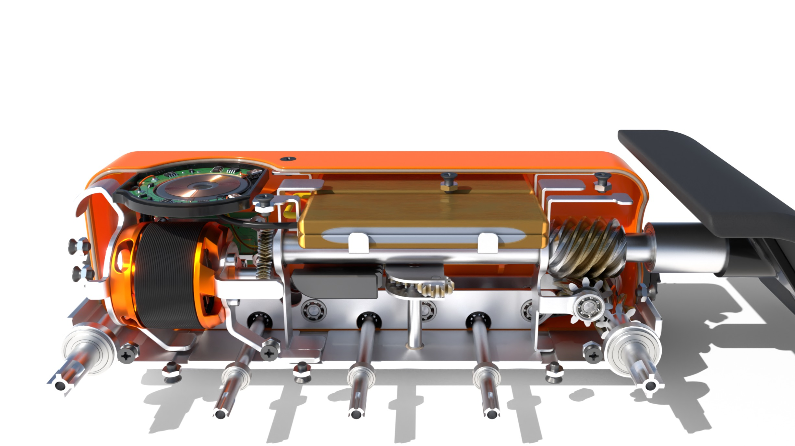
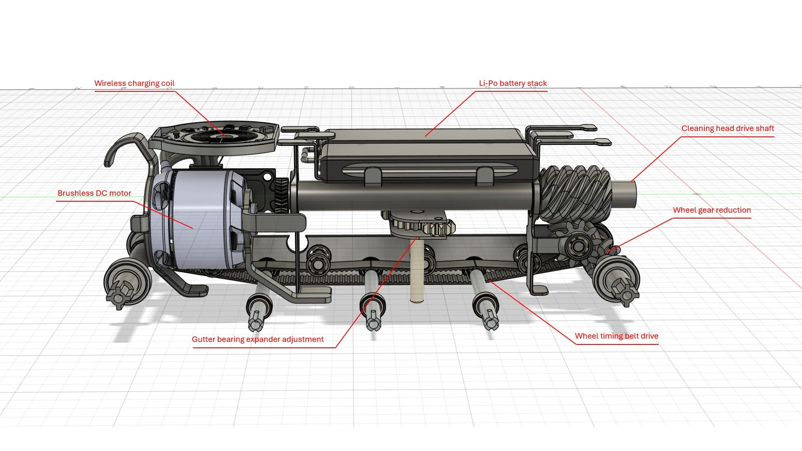
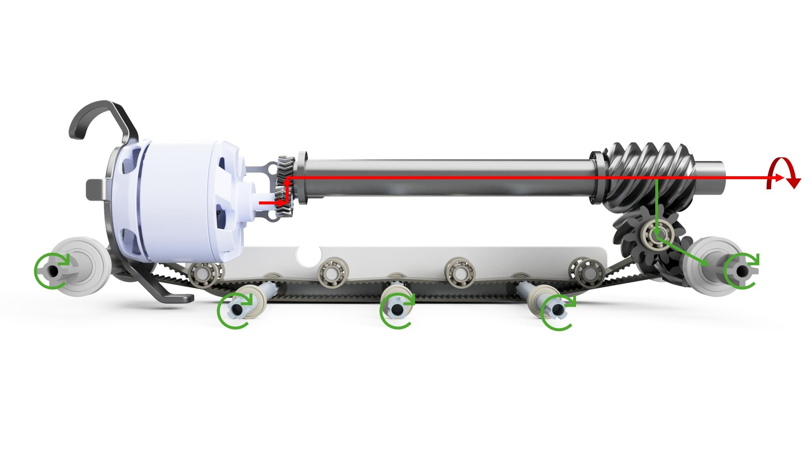
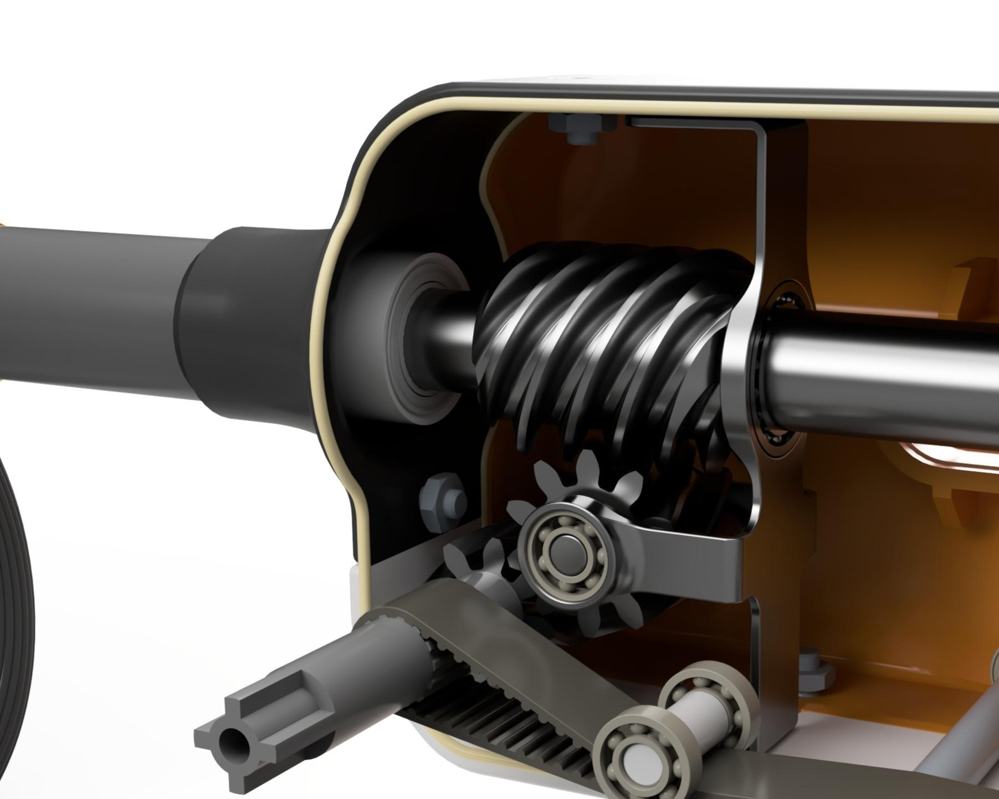
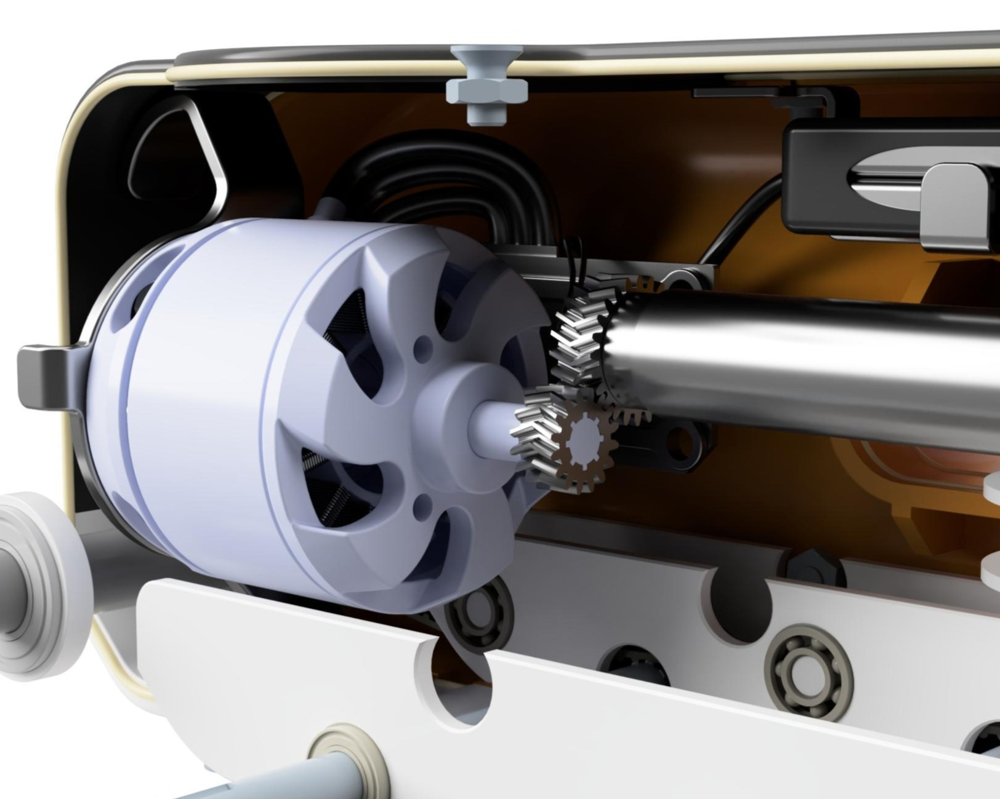
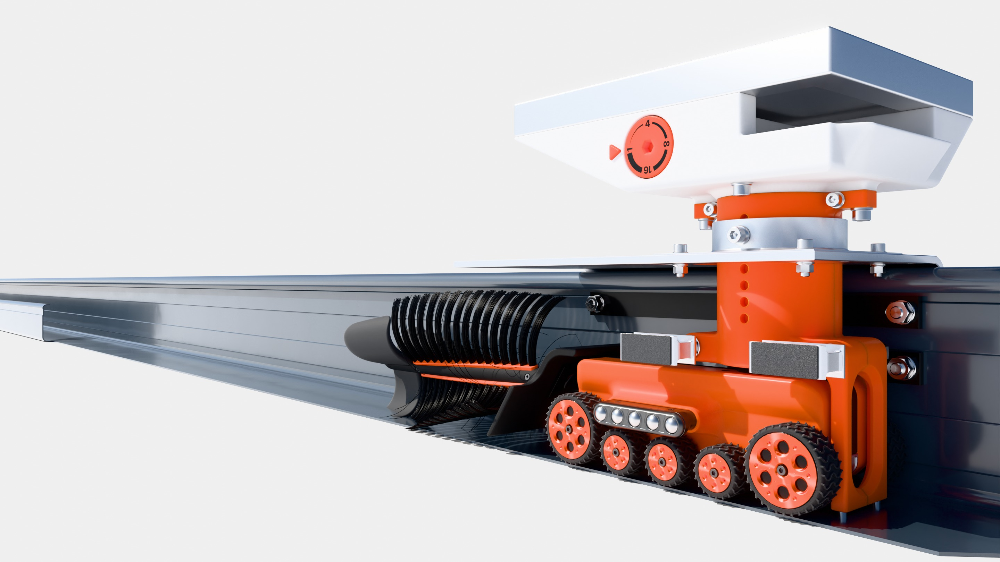

Problem & Solution
Clogged gutters create serious water damage and bushfire risks, yet cleaning them is dangerous, physically demanding, and costly, especially for elderly or physically disadvantaged homeowners. The GutterMate solves this with a permanently installed, solar-powered autonomous robot that regularly clears debris, reducing fire and overflow risk while eliminating ladder use and ongoing cleaning costs.
My Role & Responsibilities
I designed a compact internal CAD assembly that prioritised manufacturability while integrating all components within the confines of the outer shell. The layout was engineered around the tight spatial constraints of standard Australian gutters. I led the engineering of the power, drivetrain, cleaning, and control systems. This included motor selection, torque and efficiency calculations, gear train design, debris ejection analysis, and development of the autonomous control and safety systems to ensure reliable, self-sufficient operation.
Compact Internal Structure
The internal system was designed to fit tightly within standard Australian gutters while maintaining serviceability. Components including the motor, battery stack, battery management pcb, wireless charging coil, and drivetrain were efficiently arranged within the tightly packed housing. All structural frames were designed for sheet-metal cutting, bending, and spot welding to allow manufacturability and easy mass production. Variable gutter widths were also accounted for to ensure broad compatibility.


Drivetrain & Power Transmission
The drivetrain was designed to convert high-speed motor output into usable torque for both debris ejection and all-wheel propulsion. A combination of herringbone gears, worm reduction, spline shafts, and a belt-driven wheel system was implemented to balance efficiency, vibration reduction, and traction. Detailed torque, gear ratio, and efficiency calculations validated the system’s ability to deliver sufficient pushing force under worst-case conditions.



Autonomous Control
The GutterMate uses a fully autonomous control system to operate safely without user input. Solar-powered wireless charging enables fully sealed, waterproof operation, while environmental sensors determine when cleaning can occur and configurable frequency settings allow seasonal adjustment. End-of-gutter detection, automatic docking, and obstruction monitoring ensure reliable, self-sufficient performance.

Results & Key Learnings
- Successfully designed a compact, autonomous gutter-cleaning system within standard Australian gutter constraints.
- Validated drivetrain torque, debris ejection capability, and power system performance through detailed calculations.
- Awarded a 94% High Distinction for this project.
Developed strong skills in compact mechanical design, drivetrain analysis, and system-level integration, with a greater appreciation for designing around real-world constraints and manufacturability.